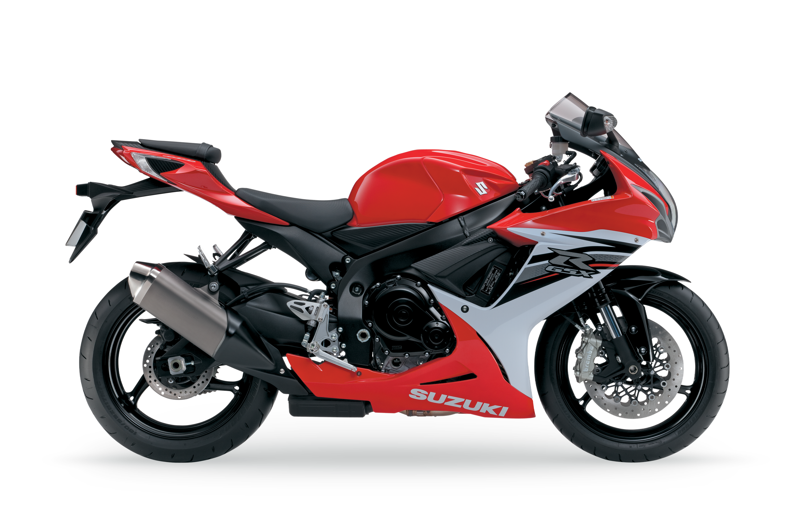
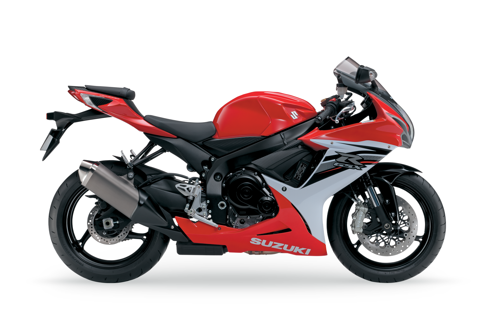

Sobre nós
O Futuro da Telemetria em Vídeo
O rastreador da BradoCar oferece mais do que apenas a localização dos veículos; ele potencializa a gestão da frota com diversos benefícios. Além de aprimorar a logística das entregas, o sistema fornece controle detalhado da velocidade e do estilo de direção dos motoristas, contribuindo para uma gestão mais eficiente e segura. Disponível 24 horas por dia, o rastreador pode ser usado em diversos ambientes, desde cidades movimentadas até operações marítimas. Ele ajuda a reduzir custos operacionais e aumentar a produtividade, proporcionando tranquilidade ao manter veículos e ativos sempre monitorados. A BradoCar é a escolha inteligente para gerenciar frotas com excelência.
Transforme os dados dos seus veículos em conhecimento e potencialize os seus resultado
A BradoCar está inovando a telemetria com seu serviço de video telemetria, oferecendo soluções personalizadas para diversas empresas. Essa tecnologia permite o monitoramento e controle remoto de ativos e operações através de câmeras e sensores inteligentes, aumentando a segurança, eficiência operacional e a assertividade nas decisões. A plataforma intuitiva da BradoCar fornece acesso em tempo real a imagens de alta definição e dados precisos, facilitando a identificação de problemas, prevenção de falhas e otimização de processos. A análise de vídeo também oferece insights valiosos para aprimorar a produtividade e a segurança no ambiente de trabalho.
Conheça Nossas Soluções
Reduza custos, melhore a produtividade e otimize jornadas de trabalho com uma plataforma que oferece a visibilidade mais detalhada do mercado.
Nosso APP
Descubra como o aplicativo de rastreamento da BradoCar pode revolucionar a forma como você monitora seus ativos e frotas. Com tecnologia de ponta e uma interface intuitiva, estamos aqui para simplificar o processo de rastreamento e oferecer total controle na palma da sua mão.
1. Tecnologia Avançada ao Seu Alcance
Você terá acesso a tecnologia de ponta que permite o rastreamento preciso e em tempo real de seu veículo.
2. Facilidade de Uso e Personalização
Com recursos intuitivos e opções de personalização, você pode adaptar o aplicativo às necessidades específicas do seu negócio.
3. Transforme sua Gestão de Ativos com BradoCar
Aposte na praticidade, eficiência e segurança que o aplicativo BradoCar oferece. Simplifique a gestão de ativos e frotas, aumente a produtividade e tenha controle total sobre suas operações.
Baixe o nosso App

Planos
"A BradoCar tem sido uma 2arceira fundamental para o crescimento do nosso negócio. Seu sistema de rastreamento avançado nos proporcionou maior controle sobre nossos ativos, otimização de rotas e redução de riscos. Além disso, a equipe da BradoCar sempre nos oferece um suporte excepcional.
David Marcos
Locadora Rent a Car
"Desde que começamos a 2tilizar os serviços da BradoCar, nossa empresa viu uma melhoria significativa na gestão da frota. O rastreamento em tempo real nos permite tomar decisões mais rápidas e eficazes, e maior segurança para nossos veículos. A BradoCar é, sem dúvida, a melhor escolha para soluções de rastreamento."
Alessandra Moura
Lider Transportes
"Estou extremamente satisfeito com os serviços da BradoCar. O sistema de rastreamento deles é preciso e confiável, e a equipe de suporte sempre está disponível para ajudar. Recomendo a BradoCar para qualquer empresa que precise de soluções de rastreamento eficientes e seguras."
Aline Silva
Gerente de Frotas